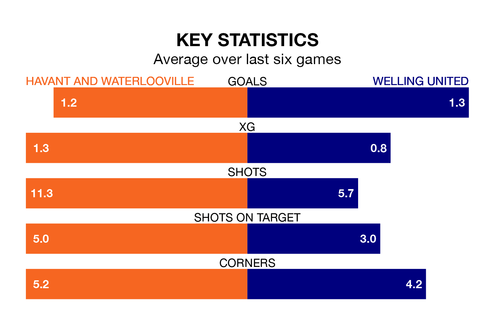

Welling United travel to Havant and Waterlooville on late Wednesday in the National League South.
The visitors come into the game on the back of a win in their last match, having beaten Torquay United 1-0 at home.
The Hawks, meanwhile, lost their last match, 2-1 against Dartford.
Havant & Waterlooville are 23rd in the table after 43 games, of which they have won 10 and drawn six, earning 36 points.
Welling are seven places ahead of the Hawks in 16th, with 12 wins and 15 draws putting them on 51 points.
In the last 10 years, Havant & Waterlooville and Welling have played each other on nine occasions. Havant & Waterlooville won two of them, Welling four, and they drew three times.
On average, the Hawks scored 1.7 goals and the Wings 1.9 in those matches.
Their last meeting was on August 26, when Welling won 3-2 at home.
With 51 goals in 43 games so far this season, the hosts are scoring at below the league average rate with 1.2 goals per game. And they are conceding more than average, letting in 85 goals at a rate of 2.0 per game.
United are also below average scorers, with 1.3 goals per game, compared to a league average of 1.4. They have conceded 1.6 goals per game.
Havant & Waterlooville are in mixed form in the National League South, with two wins and a draw from their last six games.
With three wins and two draws over that period, the Wings' form is better – they have taken 11 points from 18, compared to Havant & Waterlooville's seven.
Updated: 14:47 (UTC), 09/04/24